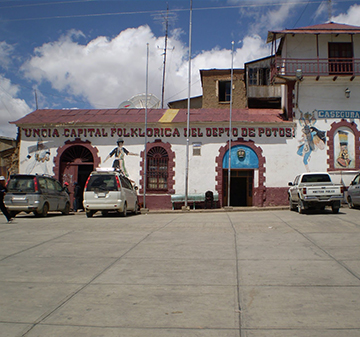
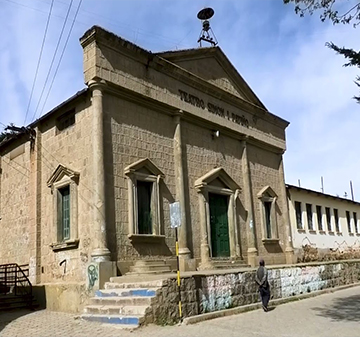
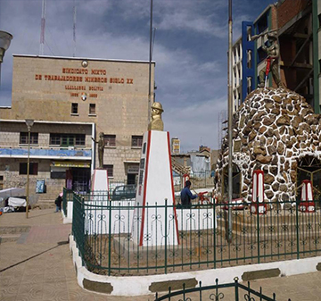

Principales Lugares

Uncia
Uncía es una pequeña ciudad y un municipio de Bolivia, capital de la provincia de Rafael Bustillo del departamento de Potosí. La localidad se encuentra en una serranía, distante a 106 km de la ciudad de Oruro y a 230 km de la ciudad de Potosí, la capital departamental.Details
Catavi
Catavi es una localidad de Bolivia, perteneciente al municipio de Llallagua de la provincia de Rafael Bustillo en el departamento de Potosí. En cuanto a distancia, Catavi se encuentra a 95 km de la ciudad de Oruro y a 245 km de la ciudad de Potosí.Details